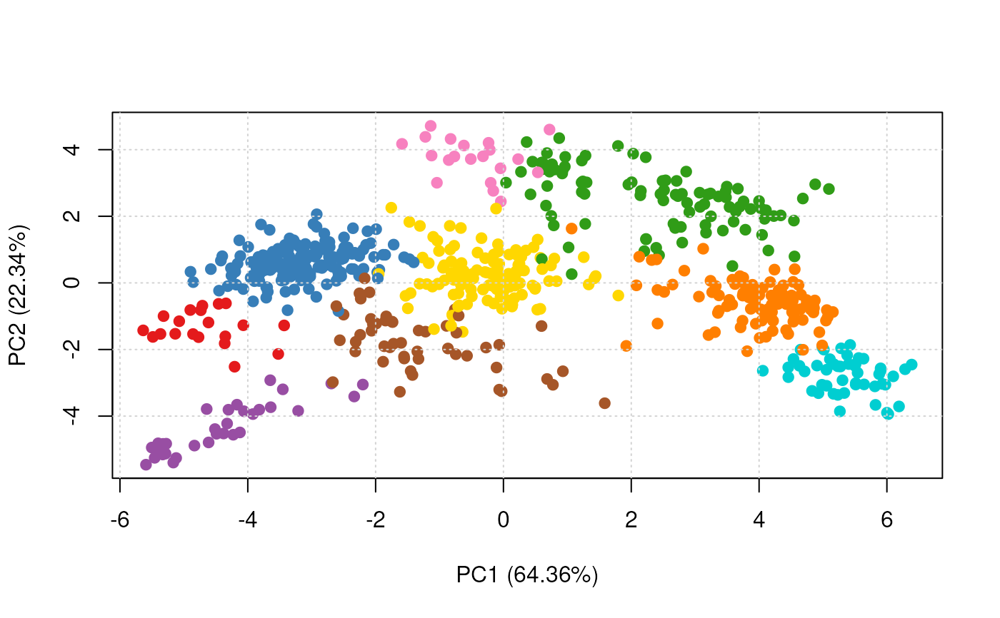

Classification using the PerTurbo algorithm.
Usage
perTurboClassification(
object,
assessRes,
scores = c("prediction", "all", "none"),
pRegul,
sigma,
inv,
reg,
fcol = "markers"
)Arguments
- object
An instance of class
"MSnSet".- assessRes
An instance of class
"GenRegRes", as generated bysvmRegularisation.- scores
One of
"prediction","all"or"none"to report the score for the predicted class only, for all classes or none.- pRegul
If
assessResis missing, apRegulmust be provided. SeeperTurboOptimisationfor details.- sigma
If
assessResis missing, asigmamust be provided. SeeperTurboOptimisationfor details.- inv
The type of algorithm used to invert the matrix. Values are : "Inversion Cholesky" (
chol2inv), "Moore Penrose" (ginv), "solve" (solve), "svd" (svd). Default value is"Inversion Cholesky".- reg
The type of regularisation of matrix. Values are "none", "trunc" or "tikhonov". Default value is
"tikhonov".- fcol
The feature meta-data containing marker definitions. Default is
markers.
Value
An instance of class "MSnSet" with
perTurbo and perTurbo.scores feature variables
storing the classification results and scores respectively.
References
N. Courty, T. Burger, J. Laurent. "PerTurbo: a new classification algorithm based on the spectrum perturbations of the Laplace-Beltrami operator", The European Conference on Machine Learning and Principles and Practice of Knowledge Discovery in Databases (ECML-PKDD 2011), D. Gunopulos et al. (Eds.): ECML PKDD 2011, Part I, LNAI 6911, pp. 359 - 374, Athens, Greece, September 2011.
Examples
library(pRolocdata)
data(dunkley2006)
## reducing parameter search space
params <- perTurboOptimisation(dunkley2006,
pRegul = 2^seq(-2,2,2),
sigma = 10^seq(-1, 1, 1),
inv = "Inversion Cholesky",
reg ="tikhonov",
times = 3)
#>
|
| | 0%
|
|===== | 7%
|
|========= | 13%
|
|============== | 20%
|
|=================== | 27%
|
|======================= | 33%
|
|============================ | 40%
|
|================================= | 47%
|
|===================================== | 53%
|
|========================================== | 60%
|
|=============================================== | 67%
|
|=================================================== | 73%
|
|======================================================== | 80%
|
|============================================================= | 87%
|
|================================================================= | 93%
|
|======================================================================| 100%
params
#> Object of class "GenRegRes"
#> Algorithm: perTurbo
#> Hyper-parameters:
#> pRegul: 0.25 1 4
#> sigma: 0.1 1 10
#> other: Inversion Cholesky tikhonov
#> Design:
#> Replication: 3 x 5-fold X-validation
#> Partitioning: 0.2/0.8 (test/train)
#> Results
#> macro F1:
#> Min. 1st Qu. Median Mean 3rd Qu. Max.
#> 1 1 1 1 1 1
#> best sigma: 0.1 1
#> best pRegul: 4 0.25
plot(params)
f1Count(params)
#> 0.25 4
#> 0.1 NA 2
#> 1 1 NA
levelPlot(params)
getParams(params)
#> sigma pRegul
#> 0.1 4.0
res <- perTurboClassification(dunkley2006, params)
getPredictions(res, fcol = "perTurbo")
#> ans
#> ER lumen ER membrane Golgi Mitochondrion PM
#> 20 181 96 107 134
#> Plastid Ribosome TGN vacuole
#> 49 50 20 32
#> MSnSet (storageMode: lockedEnvironment)
#> assayData: 689 features, 16 samples
#> element names: exprs
#> protocolData: none
#> phenoData
#> sampleNames: M1F1A M1F4A ... M2F11B (16 total)
#> varLabels: membrane.prep fraction replicate
#> varMetadata: labelDescription
#> featureData
#> featureNames: AT1G09210 AT1G21750 ... AT4G39080 (689 total)
#> fvarLabels: assigned evidence ... perTurbo.pred (11 total)
#> fvarMetadata: labelDescription
#> experimentData: use 'experimentData(object)'
#> pubMedIds: 16618929
#> Annotation:
#> - - - Processing information - - -
#> Loaded on Thu Jul 16 22:53:08 2015.
#> Normalised to sum of intensities.
#> Added markers from 'mrk' marker vector. Thu Jul 16 22:53:08 2015
#> Performed perTurbo prediction (sigma=0.1 pRegul=4) Sat Nov 23 15:32:39 2024
#> Added perTurbo predictions according to global threshold = 0 Sat Nov 23 15:32:39 2024
#> MSnbase version: 1.17.12
getPredictions(res, fcol = "perTurbo", t = 0.75)
#> ans
#> ER lumen ER membrane Golgi Mitochondrion PM
#> 14 45 28 55 46
#> Plastid Ribosome TGN unknown vacuole
#> 20 19 13 428 21
#> MSnSet (storageMode: lockedEnvironment)
#> assayData: 689 features, 16 samples
#> element names: exprs
#> protocolData: none
#> phenoData
#> sampleNames: M1F1A M1F4A ... M2F11B (16 total)
#> varLabels: membrane.prep fraction replicate
#> varMetadata: labelDescription
#> featureData
#> featureNames: AT1G09210 AT1G21750 ... AT4G39080 (689 total)
#> fvarLabels: assigned evidence ... perTurbo.pred (11 total)
#> fvarMetadata: labelDescription
#> experimentData: use 'experimentData(object)'
#> pubMedIds: 16618929
#> Annotation:
#> - - - Processing information - - -
#> Loaded on Thu Jul 16 22:53:08 2015.
#> Normalised to sum of intensities.
#> Added markers from 'mrk' marker vector. Thu Jul 16 22:53:08 2015
#> Performed perTurbo prediction (sigma=0.1 pRegul=4) Sat Nov 23 15:32:39 2024
#> Added perTurbo predictions according to global threshold = 0.75 Sat Nov 23 15:32:39 2024
#> MSnbase version: 1.17.12
plot2D(res, fcol = "perTurbo")
